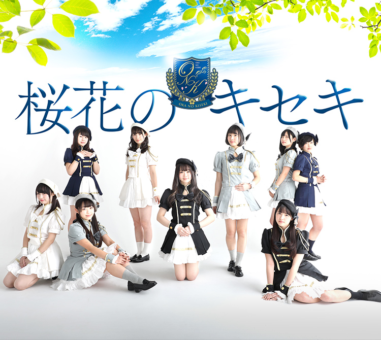
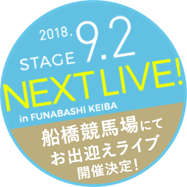
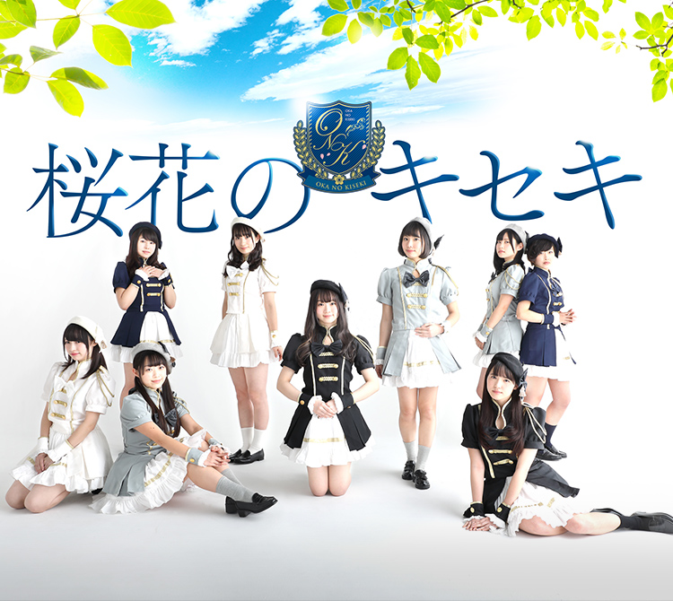
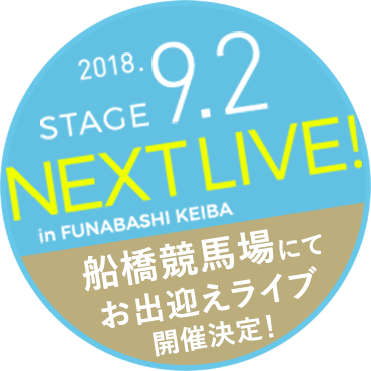

News.
-

タイトルが入ります
Schedule.
Past Schedule.
Music.

Member.
-
-
{{ member.name }}{{ member.name_yomi }}
-
趣 味{{ member.hobby }}
-
特 技{{ member.skill }}
-
{{ member.color }}
-
-
{{ detail.item }}{{ detail.text }}
-
-
Contact.出演依頼等、その他のお問い合わせはこちらからお願いします。
すべて入力必須項目です
-
{{ contact.question }}
質問内容